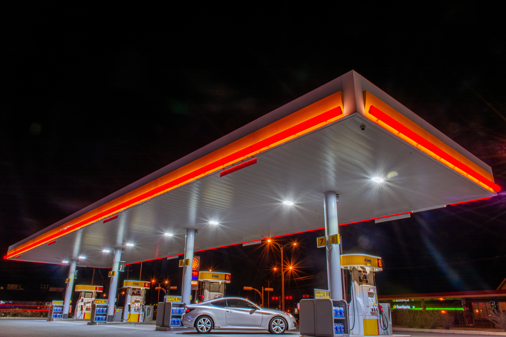
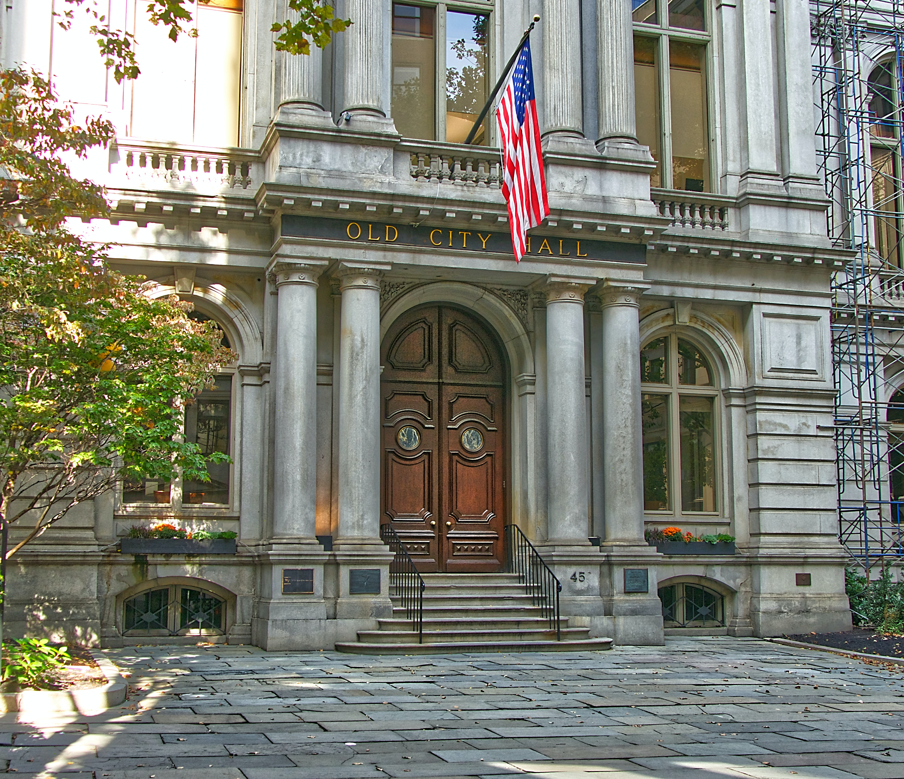
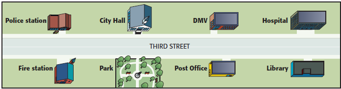

Unit 10, Lesson 4, pp. 184-185
I can ask for and give directions
WEC: Online Intro B class, Evening
Wednesday, November 9, 2022, 6:30-8:30pm
Warm up: Let's sing BINGO
There was a farmer who had a dog and bingo was his name-o. B-I-N-G-O.
Review: between, across from, near, on the corner of, next to, close to
Good Evening. Say Hello. Where is your bedroom? Where is your house?
Remember to practice
Practice is progress.
Practice is progress.
Practice is progress.
Review: Vocabulary
DS or P
Drug store or pharmacy
A

ATM
CS

computer store
R

restaurant
GS

gas station
CS
convenience store or 7-eleven
H
hospital
B

bank
BS
bus stop
SM or GS

supermarket or grocery store
PL
parking lot
S

school
D
dmv or department of motor vehicles
CH

city hall
CH
courthouse
P

park
L

library
PO
post office
FS
fire station
PS
police station
Review: Questions
- Is there a bank near here?
- Where is the police station?
- How do you get to work? to school? to the supermarket? to the park?
- Do you walk, drive, carpool, ride a bike, take a bus, take the metro, take a taxi?
Review: Map

City hall is … the park
The post office is … the park and the library
The DMV is … City Hall and the hospital
The library is … the hospital
City Hall is … the police station and the DMV
The post ofice is … the DMV
The fire station is … the police station
The park is … the fire station and the post office.
Unit 10, Lesson 4: Ask for and give directions
Vocabulary: Directions. Listen and Repeat
Turn left
Go straight
Turn right
Go two blocks
Vocabulary: Directions. Say the direction
TL
GS
TR
GTB
Listen to a question and answer
Bank
Post office
School
Hospital
Convenience Store
Police Station
Listen for the directions.
Conversation
- A: Excuse me. Where is the train station?
- B: It's on Park Street. Go straight for one block. Then turn left on Park Street.
- A: Thanks a lot!
Students please repeat the dialog
- A: Excuse me. Where is the train station?
- B: It's on Park Street. Go straight for one block. Then turn left on Park Street.
- A: Thanks a lot!
Work together
Restaurant
- A: Excuse me. Where is the …?
- B: It's on … Go straight for … Then turn … on …
- A: Thanks a lot!
Bus stop
- A: Excuse me. Where is the …?
- B: It's on … Go straight for … Then turn … on …
- A: Thanks a lot!
Post Office
- A: Excuse me. Where is the …?
- B: It's on … Go straight for … Then turn … on …
- A: Thanks a lot!
Supermarket
- A: Excuse me. Where is the …?
- B: It's on … Go straight for … Then turn … on …
- A: Thanks a lot!
Police Station
- A: Excuse me. Where is the …?
- B: It's on … Go straight for … Then turn … on …
- A: Thanks a lot!
the closest parking lot
- A: Excuse me. Where is the …?
- B: It's on … Go straight for … Then turn … on …
- A: Thanks a lot!